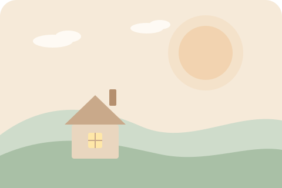

慢慢說，我在這裡聽。
這是一個安靜的地方。選一個你想聊的主題，我會用幾個簡單的問題，陪你把心裡的感受與需求一點一點整理清楚。
先說清楚
- 這是「自我整理工具」，不是醫療或專業心理諮商，也無法做診斷。
- 你說的內容只會留在這台裝置的瀏覽器，不會傳到任何伺服器。
- 如果你正處於危險或很痛苦，請直接撥打下方專線，真人會陪你。

你有一段還沒聊完的對話：
今天想聊什麼？
DEMO：這是 AI 回應，內容會送到 Google Gemini 免費版。請勿輸入真實隱私，用虛構情境體驗即可。